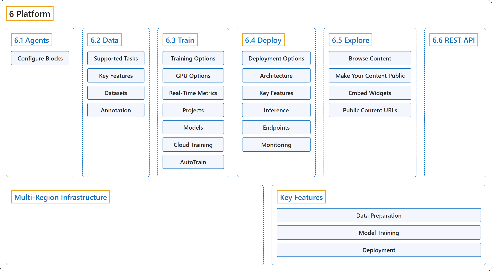

6. Platform
Classification

Glossary
| Term | Definition | 中文翻译 | Source |
|---|---|---|---|
| 6 Platform 平台 |
"Ultralytics Platform is a comprehensive end-to-end computer vision platform that streamlines the entire ML workflow from data preparation to model deployment." | Ultralytics Platform 是一个全面的端到端计算机视觉平台，简化从数据准备到模型部署的整个机器学习工作流。 | Ultralytics, n.d.-g, "Ultralytics Platform", para. 1 |
| 6.1 Agents 智能体 |
"Agents connects images, models, conditions, and actions in a visual workflow." | Agents 在一个可视化工作流中把图像、模型、条件和动作连接起来。 | Ultralytics, n.d.-a, "Agents", para. 1 |
| 6.2 Data 数据 |
(context) "Data preparation is the foundation of successful computer vision models." | （语境）数据准备是成功的计算机视觉模型的基础。 | Ultralytics, n.d.-b, "Data Preparation", para. 1 |
| 6.3 Train 训练 |
"Ultralytics Platform provides comprehensive tools for training YOLO models, from organizing experiments to running cloud training jobs with real-time metrics streaming." | Ultralytics Platform 提供训练 YOLO 模型的全套工具，从组织实验到运行带实时指标流的云端训练任务。 | Ultralytics, n.d.-e, "Model Training", para. 1 |
| 6.4 Deploy 部署 |
"Ultralytics Platform provides comprehensive model deployment options for putting your YOLO models into production." | Ultralytics Platform 提供全面的模型部署选项，把 YOLO 模型投入生产。 | Ultralytics, n.d.-c, "Deployment", para. 1 |
| 6.5 Explore 探索 |
"Ultralytics Platform Explore page showcases public content from the community." | Ultralytics Platform 的 Explore 页面展示来自社区的公开内容。 | Ultralytics, n.d.-d, "Explore", para. 1 |
| 6.6 REST API REST API |
"Ultralytics Platform provides a REST API for programmatic access to datasets, images, projects, models, training, exports, and deployments." | Ultralytics Platform 提供一个 REST API，供程序访问数据集、图像、项目、模型、训练、导出和部署。 | Ultralytics, n.d.-f, "REST API Reference", para. 1 |
| Multi-Region Infrastructure 多区域基础设施 |
(context) "Your data stays in your region. Ultralytics Platform operates infrastructure in three global regions:" | （语境）你的数据留在你所在的区域。 Ultralytics Platform 在全球三个区域运营基础设施： | Ultralytics, n.d.-g, "Multi-Region Infrastructure", para. 1 |
| Key Features 主要功能 |
(No definition) | （无定义） | Ultralytics, n.d.-g, "Key Features" |
| Data Preparation 数据准备 |
(No definition) | （无定义） | Ultralytics, n.d.-g, "Data Preparation" |
| Dataset Management 数据集管理 |
"Dataset Management: Create datasets from local files, a URL, connected cloud storage, or an on-premise host, with automatic processing" | 数据集管理：从本地文件、URL、已连接的云存储或本地部署的主机创建数据集，并自动处理 | Ultralytics, n.d.-g, "Data Preparation", item 1 |
| Annotation Editor 标注编辑器 |
"Annotation Editor: Manual annotation tools for 6 YOLO task types" | 标注编辑器：面向 6 种 YOLO 任务类型的手动标注工具 | Ultralytics, n.d.-g, "Data Preparation", item 2 |
| Skeleton Templates 骨架模板 |
"Skeleton Templates: Built-in (Person, Hand, Dog, Face, Box) and custom skeleton templates for one-click pose annotation" | 骨架模板：内置（人、手、狗、脸、框）和自定义的骨架模板，用于一键姿态标注 | Ultralytics, n.d.-g, "Data Preparation", item 3 |
| Smart Annotation 智能标注 |
"Smart Annotation: Use SAM 2.1 (Tiny, Small, Base, Large), SAM 3, or SAM 3.1 (default) from the annotation toolbar for detect, segment, semantic, and OBB tasks" | 智能标注：对检测、分割、语义分割和 OBB 任务，在标注工具栏中使用 SAM 2.1（Tiny、Small、Base、Large）、SAM 3 或 SAM 3.1（默认） | Ultralytics, n.d.-g, "Data Preparation", item 4 |
| Dataset Versioning 数据集版本管理 |
"Dataset Versioning: Create numbered NDJSON snapshots with descriptions, then download or restore any version for reproducible training" | 数据集版本管理：创建带说明的编号 NDJSON 快照，之后可下载或恢复任一版本，以便可复现地训练 | Ultralytics, n.d.-g, "Data Preparation", item 5 |
| Statistics 统计 |
"Statistics: Class distribution, split distribution, location heatmaps, and bounding box dimension analysis" | 统计：类别分布、划分分布、位置热力图和边界框尺寸分析 | Ultralytics, n.d.-g, "Data Preparation", item 6 |
| Model Training 模型训练 |
(No definition) | （无定义） | Ultralytics, n.d.-g, "Model Training" |
| Cloud Training 云端训练 |
"Cloud Training: Train on cloud GPUs (24 on all plans, 26 with Pro or Enterprise for B200 and B300) with real-time metrics and a live cost estimate" | 云端训练：在云 GPU 上训练（所有套餐 24 种，Pro 或 Enterprise 另有 B200 和 B300 共 26 种），带实时指标和实时成本估算 | Ultralytics, n.d.-g, "Model Training", item 1 |
| Remote Training 远程训练 |
"Remote Training: Train anywhere and stream metrics to Ultralytics Platform" | 远程训练：在任何地方训练，并把指标实时推送到 Ultralytics Platform | Ultralytics, n.d.-g, "Model Training", item 2 |
| Advanced Settings 高级设置 |
"Advanced Settings: Override any Ultralytics training argument from a built-in YAML editor in the training dialog" | 高级设置：在训练对话框内置的 YAML 编辑器中覆盖任何 Ultralytics 训练参数 | Ultralytics, n.d.-g, "Model Training", item 3 |
| Project Organization 项目组织 |
"Project Organization: Group related models, compare experiments, track activity" | 项目组织：把相关模型归组、比较实验、跟踪活动 | Ultralytics, n.d.-g, "Model Training", item 4 |
| 22 Export Formats 22 种导出格式 |
"22 Export Formats: ONNX, TensorRT, CoreML, LiteRT, Hailo, Ascend, and more" | 22 种导出格式：ONNX、TensorRT、CoreML、LiteRT、Hailo、Ascend 等 | Ultralytics, n.d.-g, "Model Training", item 5 |
| Deployment 部署 |
(No definition) | （无定义） | Ultralytics, n.d.-g, "Deployment" |
| Inference Testing 推理测试 |
"Inference Testing: Test models directly in the browser with your own images, a webcam capture, or the built-in examples" | 推理测试：直接在浏览器中用你自己的图像、摄像头抓拍或内置示例测试模型 | Ultralytics, n.d.-g, "Deployment", item 1 |
| Dedicated Endpoints 专用端点 |
"Dedicated Endpoints: Deploy to 42 global regions with scale-to-zero by default (single active instance)" | 专用端点：部署到全球 42 个区域，默认可缩容到零（单个活动实例） | Ultralytics, n.d.-g, "Deployment", item 2 |
| Monitoring 监控 |
"Monitoring: Real-time metrics, request logs, and performance dashboards" | 监控：实时指标、请求日志和性能仪表板 | Ultralytics, n.d.-g, "Deployment", item 3 |
References
Ultralytics. (n.d.-a). Agents. Ultralytics YOLO Docs (ultralytics 8.4.194). Retrieved October 31, 2026, from https://docs.ultralytics.com/platform/agents/
Ultralytics. (n.d.-b). Data Preparation. Ultralytics YOLO Docs (ultralytics 8.4.194). Retrieved October 31, 2026, from https://docs.ultralytics.com/platform/data/
Ultralytics. (n.d.-c). Deployment. Ultralytics YOLO Docs (ultralytics 8.4.194). Retrieved October 31, 2026, from https://docs.ultralytics.com/platform/deploy/
Ultralytics. (n.d.-d). Explore. Ultralytics YOLO Docs (ultralytics 8.4.194). Retrieved October 31, 2026, from https://docs.ultralytics.com/platform/explore/
Ultralytics. (n.d.-e). Model Training. Ultralytics YOLO Docs (ultralytics 8.4.194). Retrieved October 31, 2026, from https://docs.ultralytics.com/platform/train/
Ultralytics. (n.d.-f). REST API Reference. Ultralytics YOLO Docs (ultralytics 8.4.194). Retrieved October 31, 2026, from https://docs.ultralytics.com/platform/api/
Ultralytics. (n.d.-g). Ultralytics Platform. Ultralytics YOLO Docs (ultralytics 8.4.194). Retrieved October 31, 2026, from https://docs.ultralytics.com/platform/